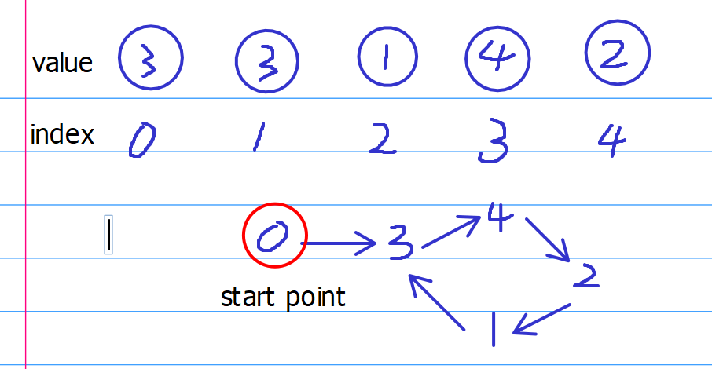

“Cycle detection algorithms. Given an array of n + 1 integers with each in [1, n], can you detect duplicates in O(1) space and O(n) time?”


1 Find the element that appear once
1.1 Problem statement:
Given an array of n + 1 integers with each in [1, n], can you detect duplicates in O(1) space and O(n) time?
1.2 Solution:
As all the integers are ranged in [1, n], there must be at least one duplicate due to the pigeonhole principle. The trick is to treat each integer as an index of the input array, such that it points to another integer in the input i.e. treat it as a “pointer”.
Then, we need to locate a starting point. In this case, if we consider the index starts from 0, the 1st integer cannot have any pointers going to it, since its position is smaller than any integers in the array. Of course, if the index starts from 1, it is intuitive to find the nth integer as the starting point as it is larger than any interger in the array.
After that, we can use Floyd’s cycle-finding algorithm (Floyd’s Tortoise and Hare).

L: the distance between the starting point and the cycle start.
C: cycle length
C’: distance between where hare stays in the cycle and the cycle start.
It holds that
$$\begin{equation}\label{eq1}
L = (N - 1) * C + (C - C’)
\end{equation}$$

1 | def findDuplicate(nums): |
1.3 Add the offset.
We can add the offset to this array, for example:
Given an array of n integers with each in [1 + offset, n + offset], can you detect duplicates in O(1) space and O(n) time?
1 | def findDuplicate_offset(nums, offset): |
reference: https://www.jasondavies.com/duplicates/
Note
1 | def findDuplicate(nums): |
For the duplicate problem, the start point can be that “start = nums[0]” or “start = 0”. If it is “start = nums[0]”, it indicates this is the second point along the path. Since the start point “0” has indegree equal to 0, the second point is also acceptable as the start point.